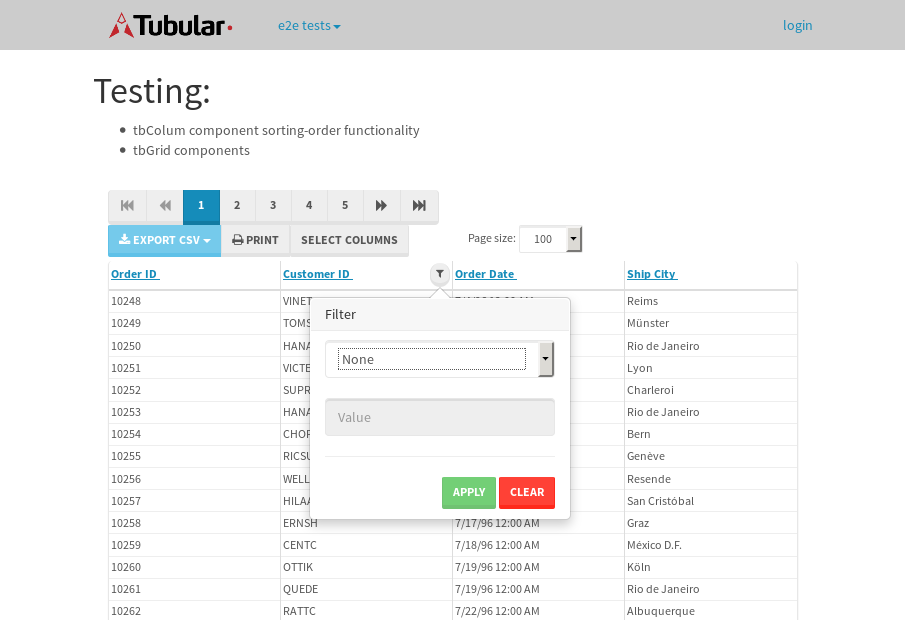

tbColumn.Grid Sorting - 27.605sTests: 5Skipped: 0Failures: 0 should sort data in ascending order then on descending order when sorting by Order Id column - 5.806sTests passed: 100.00%should order data in ascending order when click-sorting an unsorted text column - 4.925sTests passed: 100.00%should order data in descending order when click-sorting an ascending-sorted text column - 5.667sTests passed: 100.00%should order data in ascending order when click-sorting an unsorted date column - 5.341sTests passed: 100.00%should order data in descending order when click-sorting twice an unsorted date column - 5.866sTests passed: 100.00%
tbColumn.Grid Components - 3.738sTests: 3Skipped: 0Failures: 0 should print grid - 1.351s***Skipped***Tests passed: 0%should export grid - 1.213s***Skipped***Tests passed: 0%should show column selector - 1.173sTests passed: 100.00%
tbSingleForm.Form validations - 2.596sTests: 2Skipped: 0Failures: 0 should have an empty required field - 1.449sTests passed: 100.00%should not be able to click on save - 1.147sTests passed: 100.00%
Tubular Filters.tbColumnFilter - 109.317sTests: 12Skipped: 0Failures: 0 should cancel filtering when clicking outside filter-popover - 9.604sTests passed: 100.00%should disable Value text-input for "None" filter - 6.713sTests passed: 100.00%should disable apply button for "None" filter - 6.837sTests passed: 100.00%should decorate popover button when showing data is being filtered for its column - 12.48sTests passed: 100.00%should correctly filter data for the "Equals" filtering option - 8.761sTests passed: 100.00%should correctly filter data for the "Not Equals" filtering option - 8.346sTests passed: 100.00%should correctly filter data for the "Contains" filtering option - 8.652sTests passed: 100.00%should correctly filter data for the "Not Contains" filtering option - 8.632sTests passed: 100.00%should correctly filter data for the "Starts With" filtering option - 6.984sTests passed: 100.00%should correctly filter data for the "Not Starts With" filtering option - 7.121sTests passed: 100.00%should correctly filter data for the "Ends With" filtering option - 6.973sTests passed: 100.00%should correctly filter data for the "Not Ends With" filtering option - 6.927sTests passed: 100.00%
Tubular Filters.tbColumnDateTimeFilter - 136.511sTests: 12Skipped: 0Failures: 0 should cancel filtering when clicking outside filter-popover - 7.113sTests passed: 100.00%should disable Value text-input for "None" filter - 6.263sTests passed: 100.00%should disable apply button for "None" filter - 6.399sTests passed: 100.00%should clear filtering when clicking on Clean button - 18.245sTests passed: 100.00%should decorate popover button when showing data is being filtered for its column - 12.238sTests passed: 100.00%should correctly filter data for the "Equals" filtering option - 7.24sTests passed: 100.00%should correctly filter data for the "Not Equals" filtering option - 7.766sTests passed: 100.00%should correctly filter data for the "Between" filtering option - 12.792sTests passed: 100.00%should correctly filter data for the "Greater-or-equal" filtering option - 12.139sTests passed: 100.00%should corretlly filter data for the "Greater" filtering option - 12.183sTests passed: 100.00%should correctly filter data for the "Less-or-equal" filtering option - 11.494sTests passed: 100.00%should correctly filter data for the "Less" filtering option - 11.612sTests passed: 100.00%
Tubular Filters.tbColumnOptionsFilter - 83.779sTests: 3Skipped: 0Failures: 0 should cancel filtering when clicking outside filter-popover - 9.217sTests passed: 100.00%should decorate popover button when showing data is being filtered for its column - 12.054sTests passed: 100.00%should filter column-elements in accordance to the selected filter when selecting a single option - 51.054sTests passed: 100.00%
Tubular Filters.tbTextSearch - 48.948sTests: 5Skipped: 0Failures: 1 min-chars is not set - 0.825sTests passed: 100.00%should filter data in searchable-column customer name to matching inputted text, starting from 3 characters - 7.314sTests passed: 100.00%should filter data in searchable-column shipper city to matching inputted text, starting from 3 characters - 12.149sTests passed: 100.00%should show clear button when there is inputted text only - 6.398sTests passed: 100.00%should clear filtering when clicking clear button - 16.512sExpected 10 not to be 10.✗Tests passed: 0.00%
tbForm related components.tbCheckboxField - 7.477sTests: 2Skipped: 0Failures: 0 should save changes on "SAVE" - 3.654sTests passed: 100.00%should discard changes on "CANCEL" - 2.042sTests passed: 100.00%
tbForm related components.tbDropDownEditor - 12.109sTests: 5Skipped: 0Failures: 0 should set initial input value to the value of "value" attribute when defined - 1.689sTests passed: 100.00%should show the component name value in a label field when "showLabel" attribute is true - 1.98sTests passed: 100.00%should show a help field equal to this attribute, is present - 1.946sTests passed: 100.00%should submit modifications to item/server when clicking form "Save" - 3.348sTests passed: 100.00%should NOT submit modifications to item/server when clicking form "Cancel" - 2.279sTests passed: 100.00%
tbForm related components.tbTextArea - 19.275sTests: 7Skipped: 0Failures: 0 should set initial input value to the value of "value" attribute when defined - 1.827sTests passed: 100.00%should be invalidated when the number of chars is not in the range of "min" and "max" attributes - 3.496sTests passed: 100.00%should show the component name value in a label field when "showLabel" attribute is true - 1.72sTests passed: 100.00%should show a help field equal to this attribute, is present - 2.151sTests passed: 100.00%should require the field when the attribute "required" is true - 2.809sTests passed: 100.00%should submit modifications to item/server when clicking form "Save" - 3.198sTests passed: 100.00%should NOT submit modifications to item/server when clicking form "Cancel" - 2.683sTests passed: 100.00%
tbForm related components.tbDateEditor - 17.628sTests: 6Skipped: 0Failures: 4 should set initial date value to the value of "value" attribute when defined - 2.473sExpected false to be true.✗Tests passed: 0.00%should be invalidated when the date is not in the range of "min" and "max" attributes - 2.998sExpected false to be true.✗Expected 1 to be less than 1.✗Tests passed: 33.33%should show the component name value in a label field when "showLabel" attribute is true - 2.236sTests passed: 100.00%should show a help field equal to this attribute, is present - 2.217sTests passed: 100.00%should submit modifications to item/server when clicking form "Save" - 3.141sExpected false to be true.✗Tests passed: 0.00%should NOT submit modifications to item/server when clicking form "Cancel" - 2.881sExpected false to be true.✗Tests passed: 0.00%
tbForm related components.tbTypeaheadEditor - 18.395sTests: 7Skipped: 0Failures: 1 should show an options list when there is an API-info/component entered-data - 2.086sTests passed: 100.00%should select the option clicked - 2.684sTests passed: 100.00%should show a "delete" button when an option/match is selected, and delete the option if button is clicked - 2.282sFailed: each key must be a number of string; got boolean✗Tests passed: 50.00%should show a label value equal to the component name when "showLabel" attribue is true - 1.78sTests passed: 100.00%should require a value when "require" attribute is true - 2.53sTests passed: 100.00%should submit modifications to item/server when clicking form "Save" - 3.288sTests passed: 100.00%should NOT submit modifications to item/server when clicking form "Cancel" - 2.858sTests passed: 100.00%
tbForm related components.tbSimpleEditor - 21.169sTests: 9Skipped: 0Failures: 1 should set initial input value to the value of "value" attribute when defined - 1.864sTests passed: 100.00%should be invalidated when the number of chars is not in the range of "min" and "max" attributes - 2.043sTests passed: 100.00%should show the component name value in a label field when "showLabel" attribute is true - 2.001sTests passed: 100.00%should set input placeholder to the value of "placeholder" attribute - 2.371sTests passed: 100.00%should validate the control using the "regex" attribute, if present - 1.839sFailed: each key must be a number of string; got function✗Tests passed: 0.00%should show a help field equal to this attribute, is present - 1.919sTests passed: 100.00%should require the field when the attribute "required" is true - 2.554sTests passed: 100.00%should submit modifications to item/server when clicking form "Save" - 3.3sTests passed: 100.00%should NOT submit modifications to item/server when clicking form "Cancel" - 2.444sTests passed: 100.00%
tbForm related components.tbNumericEditor - 19.784sTests: 7Skipped: 0Failures: 0 should set initial component value to the value of "value" attribute when defined - 1.848sTests passed: 100.00%should be invalidated when the entered number is not in the range of "min" and "max" attributes - 3.168sTests passed: 100.00%should show the component name value in a label field when "showLabel" attribute is true - 1.787sTests passed: 100.00%should show a help field equal to this attribute, is present - 2.474sTests passed: 100.00%should require the field when the attribute "required" is true - 2.58sTests passed: 100.00%should submit modifications to item/server when clicking form "Save" - 3.545sTests passed: 100.00%should NOT submit modifications to item/server when clicking form "Cancel" - 3.02sTests passed: 100.00%
tbForm Connection Error - 2.324sTests: 1Skipped: 0Failures: 0 tbForm connection error functionality - 0.416sTests passed: 100.00%
tbForm Connection Error - 2.448sTests: 1Skipped: 0Failures: 0 tbForm connection error functionality - 0.467sTests passed: 100.00%
tbForm Connection Error - 2.635sTests: 1Skipped: 0Failures: 1 tbForm connection error functionality - 0.42sExpected '' to equal 'No data found'.✗Tests passed: 0.00%
tb Form Date Editor.tbDateEditor - 22.046sTests: 6Skipped: 0Failures: 0 should set initial date value to the value of "value" attribute when defined - 2.372sTests passed: 100.00%should be invalidated when the date is not in the range of "min" and "max" attributes - 3.891sTests passed: 100.00%should show the component name value in a label field when "showLabel" attribute is true - 3.149sTests passed: 100.00%should show a help field equal to this attribute, is present - 2.36sTests passed: 100.00%should submit modifications to item/server when clicking form "Save" - 4.936sTests passed: 100.00%should NOT submit modifications to item/server when clicking form "Cancel" - 3.347sTests passed: 100.00%
tbGridComponents - 10.226sTests: 6Skipped: 0Failures: 0 should add item with newRow method - 3.336sTests passed: 100.00%should add item with newRow method and cancel action - 0.758sTests passed: 100.00%should update item with tbSaveButton - 1.126sTests passed: 100.00%should update item with tbSaveButton and cancel action - 1.126sTests passed: 100.00%should remove item with tbRemoveButton - 1.311sTests passed: 100.00%should remove item with tbRemoveButton and cancel action - 0.733sTests passed: 100.00%
tbGridPager.navigation buttons - 8.412sTests: 1Skipped: 0Failures: 0 should perform no action when clicking on the numbered navigation button corresponding to the current-showing results page - 1.43sTests passed: 100.00%
tbGridPager.navigation buttons.first/non-last results page related functionallity - 3.431sTests: 2Skipped: 0Failures: 0 should disable "first" and "previous" navigation buttons when in first results page - 1.376sTests passed: 100.00%should enable "last" and "next" navigation buttons when in a results page other than last - 2.055sTests passed: 100.00%
tbGridPager.navigation buttons.last/non-first results page related functionallity - 3.549sTests: 2Skipped: 0Failures: 0 should disable "last" and "next" navigation buttons when in last results page - 1.71sTests passed: 100.00%should enable "first" and "previous" navigation buttons when in a results page other than first - 1.838sTests passed: 100.00%
tbGridPager.page navigation - 6.531sTests: 5Skipped: 0Failures: 0 should go to next results page when clicking on next navigation button - 1.826sTests passed: 100.00%should go to previous results page when clicking on previous navigation button - 1.388sTests passed: 100.00%should go to last results page when clicking on last navigation button - 1.065sTests passed: 100.00%should go to first results page when clicking on first navigation button - 1.132sTests passed: 100.00%should go to corresponding results page when clicking on a numbered navigation button - 1.12sTests passed: 100.00%
tbGridPagerInfo - 5.265sTests: 2Skipped: 0Failures: 0 should show text in accordance to numbered of filter rows and current results-page - 1.44sTests passed: 100.00%should show count in footer - 0.428sTests passed: 100.00%
tbHttp - 22.494sTests: 8Skipped: 0Failures: 0 should be authenticated - 3.663sTests passed: 100.00%retrieve data - 2.268sTests passed: 100.00%should not login bad credentials - 2.289sTests passed: 100.00%should have a refresh token - 2.922sTests passed: 100.00%should remove authentication - 2.332sTests passed: 100.00%get method-Is not authenticated - 2.595sTests passed: 100.00%post method-Is not authenticated - 3.589sTests passed: 100.00%should regenerate access token on post - 2.836sTests passed: 100.00%
LocalData.Grid Local Data Sorting - 8.665sTests: 4Skipped: 0Failures: 1 should order data in ascending order when click-sorting an unsorted text column - 2.045sTests passed: 100.00%should order data in descending order when click-sorting an ascending-sorted text column - 3.204sTests passed: 100.00%should correctly filter data for the "Contains" filtering option - 1.538sFailed: Element is not enabled✗Tests passed: 0.00%should correctly filter data for the "Contains" with ENTER key - 1.876sTests passed: 100.00%
OData.Grid OData Sorting - 41.075sTests: 7Skipped: 0Failures: 1 should order data in ascending order when click-sorting an unsorted numeric column - 7.515sTests passed: 100.00%should order data in descending order when click-sorting an ascending-sorted numeric column - 6.271sTests passed: 100.00%should order data in ascending order when click-sorting an unsorted text column - 4.352sTests passed: 100.00%should order data in descending order when click-sorting an ascending-sorted text column - 5.191sTests passed: 100.00%should order data in ascending order when click-sorting an unsorted date column - 6.407sTests passed: 100.00%should order data in descending order when click-sorting an ascending-sorted date column - 6.218sTests passed: 100.00%should correctly filter data for the "Contains" filtering option - 5.118sFailed: Element is not enabled✗Tests passed: 0.00%
tbPageSizeSelctor - 17.841sTests: 4Skipped: 0Failures: 0 should filter up to 10 data rows per page when selecting a page size of "10" - 3.162sTests passed: 100.00%should filter up to 20 data rows per page when selecting a page size of "20" - 2.513sTests passed: 100.00%should filter up to 50 data rows per page when selecting a page size of "50" - 5.719sTests passed: 100.00%should filter up to 100 data rows per page when selecting a page size of "100" - 4.692sTests passed: 100.00%
tbRowSelectable - 14.03sTests: 2Skipped: 0Failures: 0 selected rows - 8.339sTests passed: 100.00%unselected rows - 4.06sTests passed: 100.00%
tbSingleForm.Form fields - 15.578sTests: 7Skipped: 0Failures: 1 should load correct info - 1.183sTests passed: 100.00%should change customer name - 1.169sTests passed: 100.00%should save it - 3.056sFailed: Element is not enabled✗Tests passed: 0.00%should clear the inputs - 1.067sTests passed: 100.00%should update - 1.657sTests passed: 100.00%should reset editor - 4.244sTests passed: 100.00%should not save if not Changes - 3.201sTests passed: 100.00%
tbSingleForm.Form validations - 1.922sTests: 2Skipped: 0Failures: 0 should load correct info - 0.775sTests passed: 100.00%should not be able to click on save - 1.146sTests passed: 100.00%
tubularTemplateServiceModule.#createColumns() - 1.721sTests: 2Skipped: 0Failures: 0 should return an array with 7 elements - 0.965sTests passed: 100.00%first element should match - 0.756sTests passed: 100.00%
tubularTemplateServiceModule.#generateFieldsArray() - 1.935sTests: 2Skipped: 0Failures: 0 should return an array with 7 elements - 1.055sTests passed: 100.00%first element should match - 0.879sTests passed: 100.00%
tubularTemplateServiceModule.#generatePopup() - 1.004sTests: 1Skipped: 0Failures: 0 should html match - 1.004sTests passed: 100.00%
tubularTemplateServiceModule.#getEditorTypeByDateType() - 3.544sTests: 4Skipped: 0Failures: 0 should be tbDateTimeEditor - 0.795sTests passed: 100.00%should be tbNumericEditor - 0.802sTests passed: 100.00%should be tbCheckboxField - 0.942sTests passed: 100.00%should be tbSimpleEditor - 1.005sTests passed: 100.00%
tubularTemplateServiceModule.#generateForm() - 2.351sTests: 3Skipped: 0Failures: 0 should single layout html match - 0.935sTests passed: 100.00%should two columns layout html match - 0.717sTests passed: 100.00%should three columns layout html match - 0.699sTests passed: 100.00%
tubularTemplateServiceModule.#generateCells() - 0.712sTests: 1Skipped: 0Failures: 0 should html match - 0.712sTests passed: 100.00%
tubularTemplateServiceModule.#generateGrid() - 0.753sTests: 1Skipped: 0Failures: 0 should html match - 0.753sTests passed: 100.00%


{kind=link}